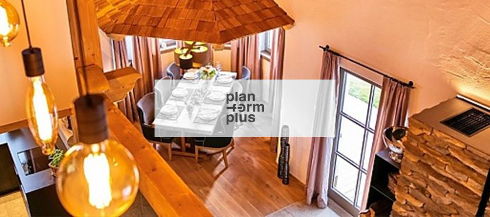

Privat & Wohnen
- Küchen mit Arbeitsplatten aus Mehrschichtplatte oder Naturstein
- Einbau- und Ankleideschränke nach Maß
- Wohn-, Ess- und Schlafzimmermöbel
- Massivholz- und Altholzmöbel
- Furnierte Möbel und hochwertige Böden
Blatt 02 · Leistungen
Gute Ideen attraktiv und nach Ihrem Geschmack umgesetzt. Wir erarbeiten gemeinsam mit Ihnen innovative und bequeme Möbelkonzepte, setzen bestehende Ideen um, bereiten sie technisch auf und bauen sie präzise ein – für Privatkunden, Unternehmen, Querdenker und Kreativköpfe in den Regionen Wels, Linz und Salzburg.
Der Weg zum Möbel
Um Ihre Visionen zu verwirklichen, ist es uns bereits beim Start wichtig, Ihre Bedürfnisse und Wünsche zu kennen. Wir beraten Sie gerne – wir menscheln.
Wir designen gemeinsam mit Ihnen Ihre perfekte Lösung. Aufgrund unserer Produktionsmöglichkeiten und unserer Visionen sind Ihren Vorstellungen keine Grenzen gesetzt – überzeugen Sie sich von unseren Referenzen.
Sie benötigen jemanden, der Ihre Möbel hochwertig, präzise und zeitgenau fertigt? Seit Jahrzehnten fertigen wir nach Plänen von namhaften Architekten.
Eine präzise und rasche Kalkulation ist für Sie wie für uns wichtig. Je detaillierter Ihre Vorgaben, umso genauer können wir Ihnen die benötigten Leistungen anbieten. Das gibt beiden Seiten innerhalb weniger Tage Preissicherheit.
Wir messen alle Projekte mit einem 3D-Messgerät für Räume und Stiegen. Das reduziert Fehler beim Naturmaß und definiert die Maße bereits im Vorfeld genauer. Präzision schon zu Projektbeginn.
Saubere Montage und liebevoller Umgang mit Ihrem bestehenden Inventar lassen Ihr Projekt perfekt werden. Unsere langjährigen Mitarbeiter, die die Möbel selbst fertigen, sind auch für den fachgerechten Einbau verantwortlich.
Stärke im Detail
„Die Detaillierung der Ausarbeitung der technischen Pläne kannten wir bisher so nicht“ – das hören wir oft von Architekten. Eine detaillierte Ausarbeitung ist eine unserer großen Stärken und vermeidet viele Probleme im Zuge der Projektabwicklung.
Klar ist es nicht immer einfach, Visionen umzusetzen. Durch unser technisches Know-how fertigen wir individuelle Sonderlösungen nach Wunsch und Maß.

Leistungsumfang
Ob eigene vier Wände oder architektonische Konstruktion – wir haben die Lösung. Sie haben weitere Fragen oder können es kaum erwarten, Ihre Pläne umzusetzen? Setzen Sie sich gleich heute mit uns in Verbindung.
Beschreiben Sie Ihr Vorhaben, laden Sie Pläne oder Fotos hoch – wir kalkulieren und melden uns zurück.